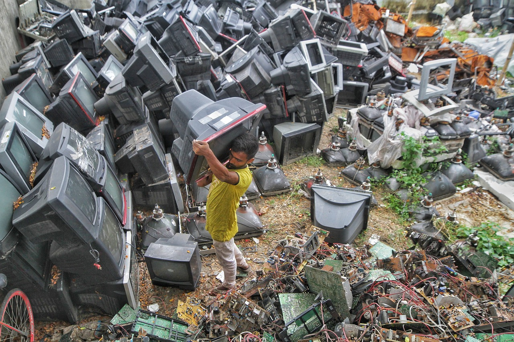

Costes Energéticos y Residuos Generados
La producción de ordenadores y móviles es un proceso complejo que implica un consumo significativo de energía y la generación de diversos tipos de residuos. Estos factores tienen un impacto ambiental considerable y representan desafíos importantes para la sostenibilidad de la industria tecnológica.
1. Costes Energéticos

El consumo de energía en la producción de ordenadores y móviles se da en varias etapas:
- Extracción y procesamiento de materias primas: La minería y el refinamiento de metales como el aluminio, el oro y el cobre son procesos muy intensivos en energía.
- Fabricación de componentes: La producción de microchips, pantallas y otros componentes electrónicos requiere salas limpias y procesos de alta precisión que consumen grandes cantidades de electricidad.
- Ensamblaje: Aunque el ensamblaje en sí mismo puede no ser tan intensivo en energía como otras etapas, la escala de producción global implica un consumo total significativo.
- Transporte: El transporte de materias primas, componentes y productos terminados a nivel mundial consume combustibles fósiles y contribuye a las emisiones de gases de efecto invernadero.
[Imagen: Fábrica con paneles solares] - Unsplash
2. Residuos Generados

La producción de ordenadores y móviles genera diversos tipos de residuos:
- Residuos de materias primas: La extracción y el procesamiento de minerales pueden generar grandes cantidades de residuos de roca y escombros.
- Residuos de fabricación: Los procesos de producción pueden generar residuos químicos, aguas residuales contaminadas y desechos de materiales.
- Residuos de embalaje: El embalaje de productos y componentes contribuye a la generación de residuos sólidos.
- Residuos peligrosos: Algunos componentes electrónicos contienen sustancias tóxicas como plomo, mercurio y cadmio, que requieren un manejo y una eliminación especiales.
[Imagen: Residuos industriales en una fábrica] - Pexels
3. Impacto Ambiental
Los costes energéticos y los residuos generados en la producción de ordenadores y móviles tienen un impacto ambiental significativo:
- Cambio climático: El consumo de energía a partir de combustibles fósiles contribuye a las emisiones de gases de efecto invernadero y al calentamiento global.
- Agotamiento de recursos: La extracción de materias primas agota los recursos naturales y puede causar daños a los ecosistemas.
- Contaminación: Los residuos pueden contaminar el aire, el agua y el suelo, afectando a la salud humana y la biodiversidad.
- Generación de residuos electrónicos: La rápida obsolescencia de los dispositivos electrónicos contribuye al creciente problema de los residuos electrónicos, que contienen sustancias peligrosas y requieren un manejo especializado.
4. Estrategias de Mitigación
Para reducir los costes energéticos y los residuos generados en la producción de ordenadores y móviles, se pueden implementar diversas estrategias:
- Eficiencia energética: Mejorar la eficiencia de los procesos de producción para reducir el consumo de energía.
- Energías renovables: Utilizar fuentes de energía renovables, como la solar y la eólica, para alimentar las fábricas y las operaciones de transporte.
- Minimización de residuos: Reducir la generación de residuos a través de la optimización de los procesos de producción y el uso de materiales reciclables.
- Gestión adecuada de residuos: Implementar sistemas de recogida, reciclaje y eliminación segura para los residuos generados, incluyendo los residuos peligrosos.
- Diseño para la sostenibilidad: Diseñar productos que sean más duraderos, reparables y reciclables, y utilizar materiales menos tóxicos.
- Economía circular: Adoptar modelos de negocio que fomenten la reutilización, la reparación y el reciclaje de los productos y sus componentes.